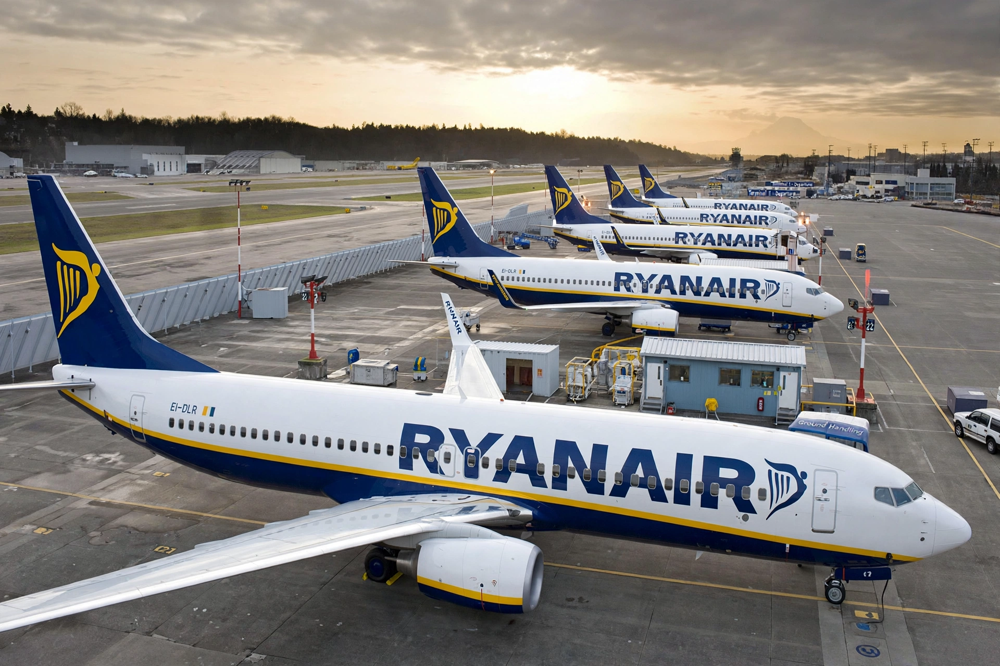

From Wikipedia, the free encyclopedia
| Ryanair | |
|---|---|
| IATA / ICAO | FR / RYR |
| Founded | 28 November 1984 (as Danren Air) |
| Commenced operations | 8 July 1985 |
| Headquarters | Swords, County Dublin, Ireland |
| Key people | Michael O'Leary (Group CEO) |
| Operating bases | More than 90 across Europe and North Africa |
| Fleet size | Over 550 aircraft (Boeing 737 family) |
| Passengers | c. 184 million (FY2024) |

A Ryanair Boeing 737-800, the backbone of the airline's fleet.
Ryanair is an Irish ultra low-cost airline headquartered in Swords, County Dublin, Ireland. Founded in 1984, it is the largest airline in Europe by passenger numbers and operates more than 3,000 flights daily to over 200 destinations in more than 40 countries. The Ryanair Group also includes Buzz, Malta Air, Lauda Europe and Ryanair UK.
Ryanair was founded in 1984 as Danren Air by Christopher Ryan, Liam Lonergan and businessman Tony Ryan. It began operations in 1985 with a 15-seat Embraer Bandeirante flying between Waterford and London Gatwick. After early losses, the airline was restructured in 1991 along the lines of Southwest Airlines' low-cost model under chief executive Michael O'Leary, who joined the company in 1988.
Following the deregulation of European air travel in 1997, Ryanair expanded rapidly across the continent, ordering large numbers of Boeing 737 aircraft and opening bases at secondary airports. It floated on the Dublin and NASDAQ stock exchanges in 1997. A bid to acquire Aer Lingus, first launched in 2006, was repeatedly blocked by competition authorities and abandoned in 2015.
Ryanair pioneered the ultra-low-cost model in Europe: a single aircraft type, fast turnarounds, flights to cheaper secondary airports, no-frills service, and extensive ancillary revenue from baggage fees, priority boarding, seat selection and onboard sales. The company is known for its adversarial approach to costs, unions and regulators, and for publicity-seeking proposals such as charging for lavatory use, which was never implemented.
The airline has faced criticism over customer service, refund handling during the COVID-19 pandemic, employment practices and environmental impact. In 2017, a rostering failure led to thousands of cancelled flights and prompted Ryanair to recognize pilots' unions for the first time.
Ryanair operates an all-Boeing 737 fleet, principally the 737-800 and the higher-density 737 MAX 8-200 "Gamechanger". In 2023 the group ordered up to 300 Boeing 737 MAX 10 aircraft.